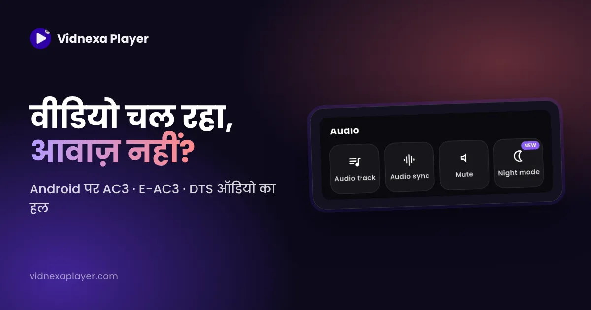
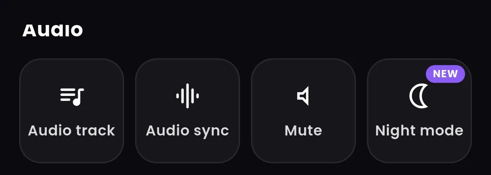

Android पर वीडियो चल रहा है पर आवाज़ नहीं? AC3, E-AC3 और DTS ऑडियो का हल
▶ Google Play से Vidnexa लें
तस्वीर ठीक चल रही है, पर आवाज़ बिल्कुल नहीं। फ़ाइल या स्पीकर को दोष देने से पहले ऑडियो फ़ॉर्मेट देखें: फ़िल्मों की फ़ाइलों में अक्सर Dolby Digital (AC3), Dolby Digital Plus (E-AC3) या DTS ऑडियो होता है, और हर फ़ोन या प्लेयर इन्हें नहीं चला पाता।

Android पर वीडियो में आवाज़ क्यों नहीं आती?
हर वीडियो फ़ाइल में एक वीडियो स्ट्रीम और एक या ज़्यादा ऑडियो स्ट्रीम होती हैं, और हर एक किसी कोडेक से कंप्रेस होती है। अगर प्लेयर वीडियो कोडेक समझता है पर ऑडियो कोडेक नहीं, तो यही होता है: तस्वीर चलती है, आवाज़ नहीं। फ़िल्मों की डाउनलोड की गई फ़ाइलों में अक्सर AC3, E-AC3 या DTS जैसे सराउंड-साउंड कोडेक होते हैं, जिनके डिकोडर कई फ़ोन और डिफ़ॉल्ट प्लेयर में नहीं होते।
AC3 और E-AC3 क्या हैं?
AC3 यानी Dolby Digital, DVD और टीवी ब्रॉडकास्ट में इस्तेमाल होने वाला 5.1 सराउंड फ़ॉर्मेट। E-AC3 (Dolby Digital Plus) इसका नया रूप है, जो स्ट्रीमिंग डाउनलोड और वेब रिप में आम है। DTS एक दूसरा सराउंड फ़ॉर्मेट है जो कई Blu-ray रिप में मिलता है। ये सब सामान्य फ़ॉर्मेट हैं, सवाल बस यह है कि आपका प्लेयर इन्हें डिकोड कर पाता है या नहीं।
हल 1: AC3, E-AC3 और DTS चलाने वाले प्लेयर में वीडियो खोलें
सबसे जल्दी हल है ऐसा प्लेयर जो ये फ़ॉर्मेट ख़ुद डिकोड करे, फ़ोन के भरोसे न रहे। Vidnexa Player AC3 (Dolby Digital), E-AC3 (Dolby Digital Plus) और DTS ऑडियो चलाता है, इसलिए जो फ़िल्म गैलरी में बिना आवाज़ के चल रही थी, वह इसमें आवाज़ के साथ चलेगी। ऐप इंस्टॉल करें, वही फ़ाइल खोलें, और आवाज़ तुरंत आनी चाहिए।
हल 2: ऑडियो ट्रैक बदलें
कई फ़िल्मों में दो या ज़्यादा ऑडियो ट्रैक होते हैं, जैसे एक E-AC3 5.1 ट्रैक और एक AAC स्टीरियो ट्रैक, या अलग-अलग भाषाएँ। चुने हुए ट्रैक में आवाज़ न हो, तो प्लेबैक मेन्यू खोलकर दूसरा ट्रैक चुनें। Vidnexa Player में Player Controls › Audio › Audio track से डुअल-ऑडियो फ़ाइलों की भाषा और ट्रैक बदलें। कौन-सा कोडेक है, यह जानने के लिए Media info (Save & Share में) देखें।

हल 3: वॉल्यूम, म्यूट और Bluetooth जाँचें
- वीडियो चलते समय वॉल्यूम-अप बटन दबाएँ, ताकि मीडिया वॉल्यूम बढ़े, रिंगर नहीं।
- देखें कि प्लेयर ख़ुद म्यूट तो नहीं है (Vidnexa में: Player Controls › Audio › Mute)।
- आवाज़ है पर बहुत धीमी? फ़ोन का वॉल्यूम और Vidnexa के Player Controls में Boost विकल्प देखें।
- ईयरबड या स्पीकर जुड़े हों तो आवाज़ वहाँ जा रही हो सकती है। Bluetooth बंद करके फिर से देखें।
हल 4: आवाज़ है, पर तस्वीर से आगे-पीछे
अगर आवाज़ आ रही है पर तस्वीर से मेल नहीं खाती, तो यह सिंक की समस्या है, कोडेक की नहीं। Bluetooth हेडफ़ोन थोड़ी देरी जोड़ते हैं। Vidnexa Player में Player Controls › Audio › Audio sync से आवाज़ आगे या पीछे करके तस्वीर से मिलाएँ।
हल 5: आख़िरी उपाय: सिर्फ़ ऑडियो कन्वर्ट करें
अगर फ़ोन का कोई भी प्लेयर ऑडियो नहीं चला पाए, तो कंप्यूटर पर सिर्फ़ ऑडियो ट्रैक को AAC में बदला जा सकता है, वीडियो वैसा ही रहता है। इसमें समय लगता है, इसलिए पहले ऊपर वाले हल आज़माएँ।
अक्सर पूछे जाने वाले सवाल
वीडियो में तस्वीर है पर आवाज़ क्यों नहीं?
प्लेयर वीडियो कोडेक सपोर्ट करता है पर ऑडियो कोडेक नहीं। फ़िल्मों में अक्सर AC3, E-AC3 या DTS ऑडियो होता है। Vidnexa Player जैसे प्लेयर में फ़ाइल खोलें, जो ये फ़ॉर्मेट चलाता है, या दूसरा ऑडियो ट्रैक चुनें।
क्या Vidnexa Player में AC3, E-AC3 और DTS ऑडियो चलता है?
हाँ। Vidnexa Player AC3 (Dolby Digital), E-AC3 (Dolby Digital Plus) और DTS ऑडियो चलाता है, इसलिए ऐसी फ़िल्में आवाज़ के साथ चलती हैं।
E-AC3 ऑडियो क्या है?
E-AC3 यानी Dolby Digital Plus, एक सराउंड-साउंड ऑडियो फ़ॉर्मेट जो कई स्ट्रीमिंग डाउनलोड और वेब रिप में होता है। हर फ़ोन या प्लेयर इसे डिकोड नहीं कर पाता।
क्या बिना कन्वर्ट किए आवाज़ ठीक हो सकती है?
ज़्यादातर हाँ। AC3, E-AC3 और DTS चलाने वाले प्लेयर में फ़ाइल खोलने या ऑडियो ट्रैक बदलने से बिना कन्वर्ट किए समस्या हल हो जाती है।
Bluetooth हेडफ़ोन में आवाज़ देर से क्यों आती है?
Bluetooth थोड़ी देरी जोड़ता है। प्लेयर की ऑडियो सिंक सेटिंग से आवाज़ को आगे या पीछे करके तस्वीर से मिलाएँ।
Vidnexa Player मुफ़्त डाउनलोड करें
4K/8K वीडियो, HDR+ पिक्चर मोड, म्यूज़िक, फ़ाइलें और फ़ोटो — एक ऐप, डाउनलोड मुफ़्त, साइन-अप की ज़रूरत नहीं।
▶ Google Play से डाउनलोड करें